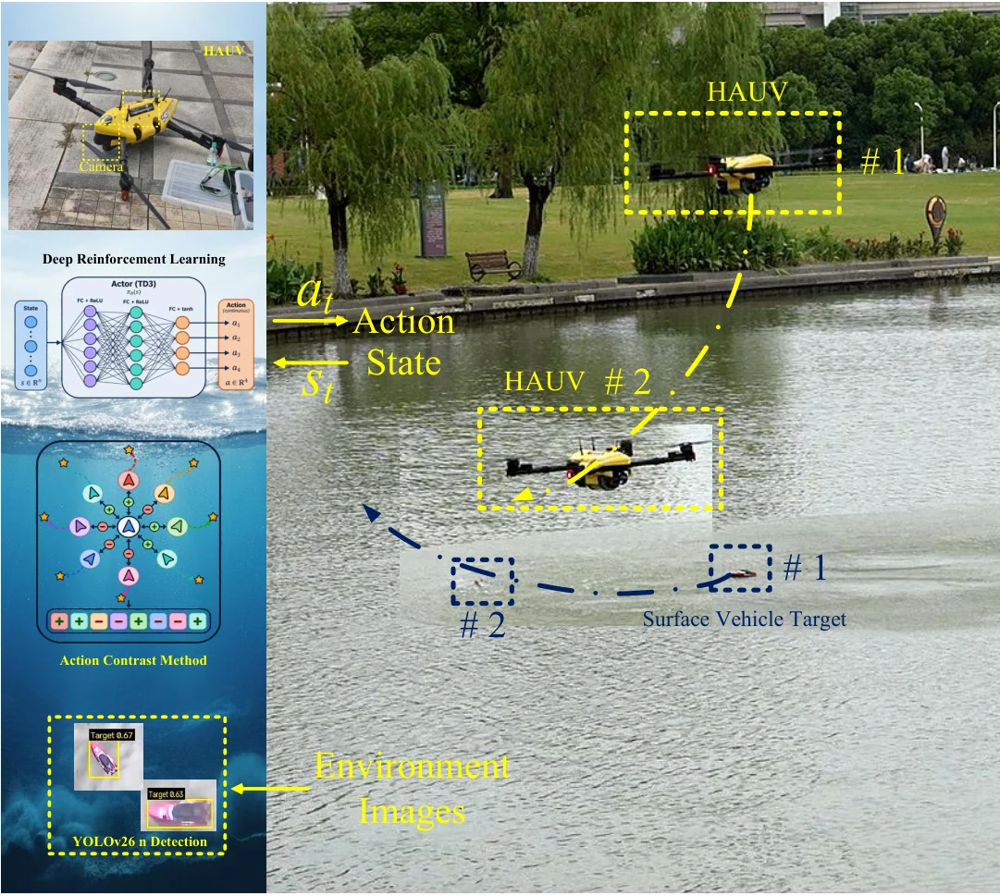
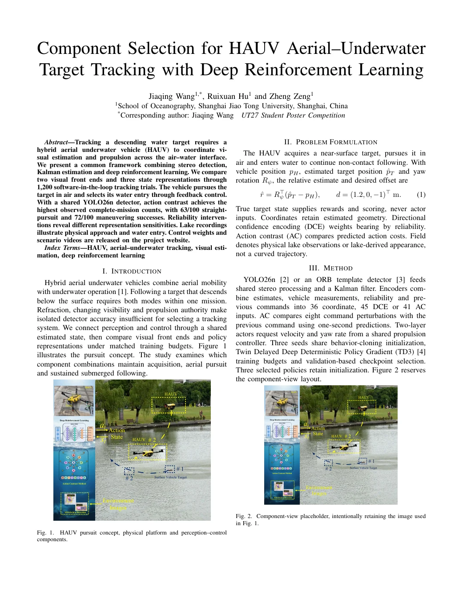
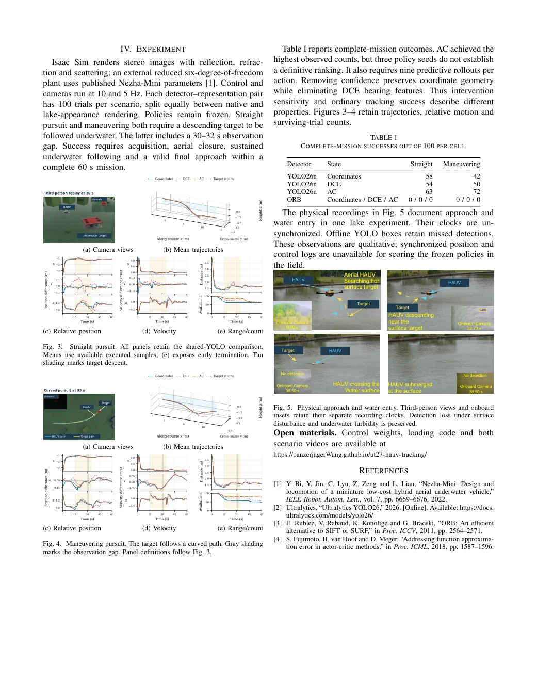

0160 s
Straight pursuit
Aerial acquisition, descent and submerged following
Cyan traces the HAUV; yellow traces the target. The small window retains the original onboard camera sequence.
Download MP4 ↓UT27 · STUDENT POSTER COMPETITION
Component Selection for HAUV Aerial–Underwater Target Tracking with Deep Reinforcement Learning
A hybrid aerial underwater vehicle pursues a moving water target in air, enters the water through feedback control and continues following underwater.
School of Oceanography, Shanghai Jiao Tong University
* First and corresponding author · 王家卿

WATCH THE TRACKING
Third-person replay with a synchronized first-person YOLO26n detection inset. Each video retains the complete 60-second record.
Aerial acquisition, descent and submerged following
Cyan traces the HAUV; yellow traces the target. The small window retains the original onboard camera sequence.
Download MP4 ↓A turning target and interrupted observations
The target changes heading while descending. The original 30–32 s onboard observation gap remains visible.
Download MP4 ↓These are the fixed Coordinates-policy examples used in the paper, with policy seed 60 and target seed 83000. They illustrate recorded behavior, not AC-policy performance or the average trial. The straight example fails the original full-mission criterion; the curved example passes. Both are shown without removing failed intervals.
PERCEPTION → ESTIMATION → ACTION
Stereo target detections feed a Kalman filter. The policy receives estimated target geometry, vehicle measurements and observation reliability. A common controller translates its commands into aerial or underwater actuation.
Estimated relative position remains explicit, with reliability supplied separately.
Four directional faces couple target bearing with observation confidence.
Eight command perturbations are compared with the previous action using short predictive rollouts.
COMPLETE-MISSION EVALUATION
Success requires early acquisition, aerial closure, sustained submerged following and a valid final approach. Reaching the final time step alone is insufficient.
| Detector | State | Straight | Curved |
|---|---|---|---|
| YOLO26n | Coordinates | 58 / 100 | 42 / 100 |
| YOLO26n | DCE | 54 / 100 | 50 / 100 |
| YOLO26n | AC | 63 / 100 | 72 / 100 |
| ORB | Coordinates | 0 / 100 | 0 / 100 |
| ORB | DCE | 0 / 100 | 0 / 100 |
| ORB | AC | 0 / 100 | 0 / 100 |
Quantitative results are from software-in-the-loop simulation with rendered stereo observations. The 100-trial cells retain 50 earlier trials and add 50 trials with frozen settings after those results were reviewed. Physical lake recordings in the abstract are qualitative observations; synchronized navigation and control logs are unavailable for field scoring.
OPEN CONTROL POLICIES · BSD-3-CLAUSE
All nine validation-selected actors, their exact state encoders and the shared controller. Exported parameters match the frozen study checkpoints.
Loading checkpoint details… Read the weight manifest.
Checkpoint selection included the behavior-cloning initialization. AC seeds 60 and 62, and DCE seed 62, retain that initialization. The release records this selection explicitly. The controller uses the study’s reduced plant and interface assumptions; the reported validation is simulation.
python -m pip install -r requirements.txt
python -m examples.run_policy --representation action_contrast --seed 60Run from the extracted release folder. Outputs are requested yaw-frame velocities and yaw rate.
Model card and input definitions ↗ / 90 exact-output comparisons ↗
UT27 STUDENT POSTER COMPETITION
Abstract, Introduction, Problem Formulation, Method, Experiment and References. All original figure panels are retained, including the intentionally repeated Figure 2 placeholder.
Jiaqing Wang is listed first and as corresponding author, followed by Ruixuan Hu and Zheng Zeng.
Open PDF ↗LaTeX source + figures ↓Prepared for the competition. UT27 author information ↗

